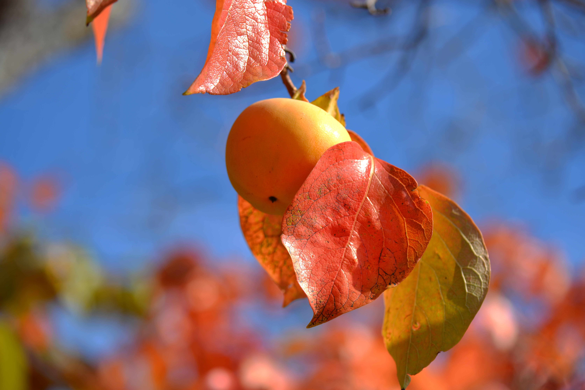

A fresh, nutritious, local buffet for you and for the animals.

HEcA analyzes sun and soil factors to select appropriate perennial plant species that grow useful products and do not require re-planting every year. Carefully chosen perennials can out-compete grass and once established be "weeded" simply by mowing or string-trimming around them. In this way, human and wildlife food can be grown with minimal energy inputs and in a manner that integrates seamlessly with a homeowner's existing landscaping practices. HEcA experts can even help clients identify and utilize edible plants that already exist on their property (i.e. foraging). This educational component is one of our core offerings, and clients are invited to take an active role in our work. A particularly motivated client may even choose to spearhead long-term collaborative plant breeding efforts to “improve” plants (e.g. increase food productivity, improve cold hardiness). Bonus: Our analysis of the sun can be extended to provide a map of a house’s solar energy production potential.
As for metrics of success, HEcA can track the total number and type of species planted as a company and thereby estimate total production of food for humans and wildlife. We will also confirm over time that clients' landscaping costs and labor are no higher (and perhaps lower) than before our intervention. Homeowners and tenants may even choose to estimate their cost savings from home-grown plant products.